getLife
A coaching solution that supports the idea of hybrid wellbeing through a holistic wellness approach. For helping the people recovering from injury, to rehabilitate themselves at their own pace, within the comfort of their home.
Designing for hybrid wellbeing
To design a coaching solution that supports the idea of hybrid through a holistic wellness approach.
Sustaining behavioral change
To achieve a sustainable behavioral change for the people who are currently dealing with injury or have a history of injury.
What is getLife
getLife is a support system for people who are going through physical injury or have a history of physical injury. It is an ecosystem consisting of technology and people, to serve the people with injury - to motivate and rehabilitate themselves through their difficult times towards their overall physical, mental and social well-being, within the comfortable and private space of their home.
In this ecosystem, with the help of a human coach/physiotherapist, an AI Coach, and computer vision, trainees train machine learning algorithms to align their particular injuries with the most appropriate workout routines. With the help of their AI Coach they rehabilitate themselves at their own pace, comparing themselves with their own former condition - while being matched, in parallel, with other trainees in the getLife community to motivate and support each other through adversity.
Research
Research & Interviews
Research was conducted to define holistic wellbeing and explore current existing applications and tools. Interviews were conducted focused on people's history with injuries, stories about self-motivation, and experiences with wellness applications.
Wellness Definition
Wellness refers to diverse and interconnected dimensions of physical, mental, and social well-being that extend beyond the traditional definition of health. It includes choices and activities aimed at achieving physical vitality, mental alacrity, social satisfaction, a sense of accomplishment, and personal fulfillment.
- Physical Activity
- Nutrition & Diet
- Bad habits and their control
- Medical Care
- Rest & Sleep
- Cognitive well-being
- Behavioral well-being
- Emotional well-being
- Communication and Interaction
- Meaningful relationships
- Maintaining a good support network
Existing Applications
Research on current existing applications was conducted to gather insights on recent trends. Applications studied include Charity Miles, Solos, Cove, Happy Not Perfect, BetterMe, Hado, QuasAR, Strava, MyCrew, Trekking Together, Help Steps, Relive, and more. Application mapping was carried out based on how each application contributes to the user's physical, mental, and social health.
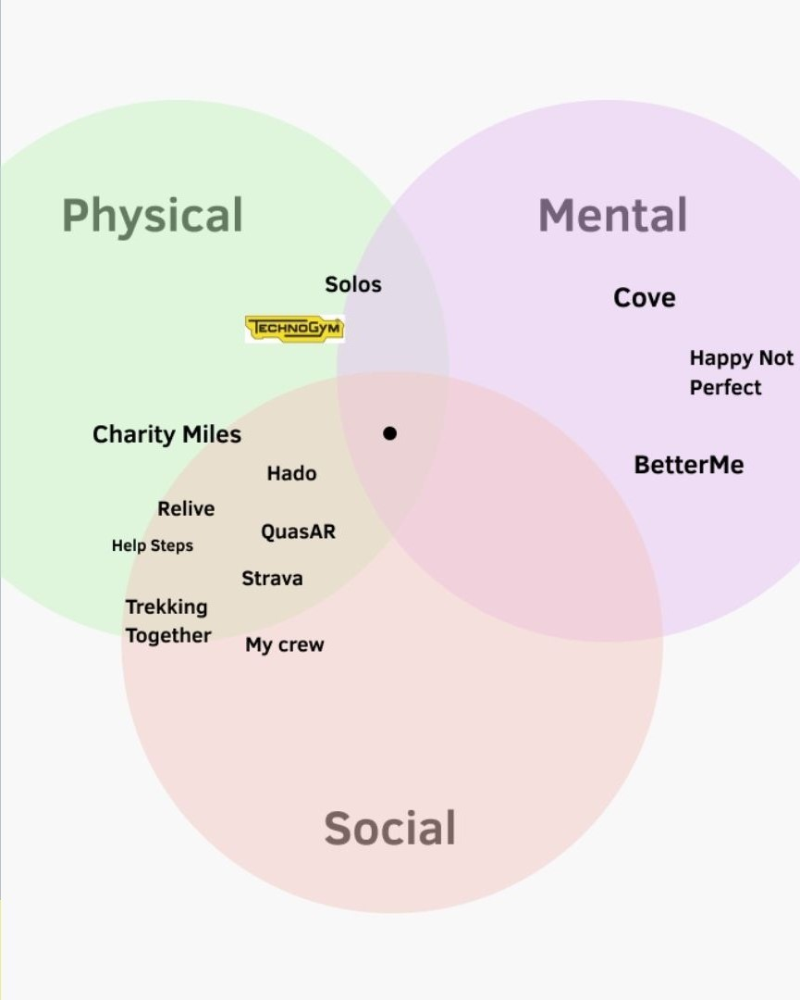
Voices from the field
"...I did not want my body to heal to a frozen state. Even though it was tough I tried to be active throughout my recovery days." M, USA, 25 - Active
"...the injury in my hand actually never recovered but I have gotten used to it now." F, Spain, 25 - Moderately Active
"...a little uneasy to use the interface while doing yoga. As it was difficult for my instructor also verbally explaining the correct position to me. Later I joined in-person classes." F, Italy, 22 - Moderately Active
"...though my ankle injury I was a little worried to go back to my volleyball practice even after my recovery, but I felt a sense of responsibility towards my teammates and I was missing the time playing with them. That encouraged me back to the court." F, Turkey, 22 - Sedentary
What the research revealed
Motivation
People with injuries motivate themselves differently based on their own capabilities and circumstances.
Smoother Tech
Proper balance between use of the interface and the workout activity itself, is important.
Individual Needs
There is a certain need for customized systems that can help users through their own individual injuries, towards their overall wellness.
Design Challenge
How can we motivate and rehabilitate people after their experience with injuries, to get back on with their lives while sustaining their exercise habits?
Solution
Envisioned Solution
A hybrid platform for people with injuries, to motivate and rehabilitate themselves towards a better life - built using computer vision, a human coach, an AI Coach, and community support.
Ecosystem Members
- Users
- Physiotherapist / Human Coach
- AI Coach & Mobile Application
- Computer Vision (Webcam / Camera / Heatmap Sensor)
AI Exploration - How Pose Estimation Works
Phase 1 - I. AI is fed with numerous exercise and body pose data (videos, images, etc.) for learning.
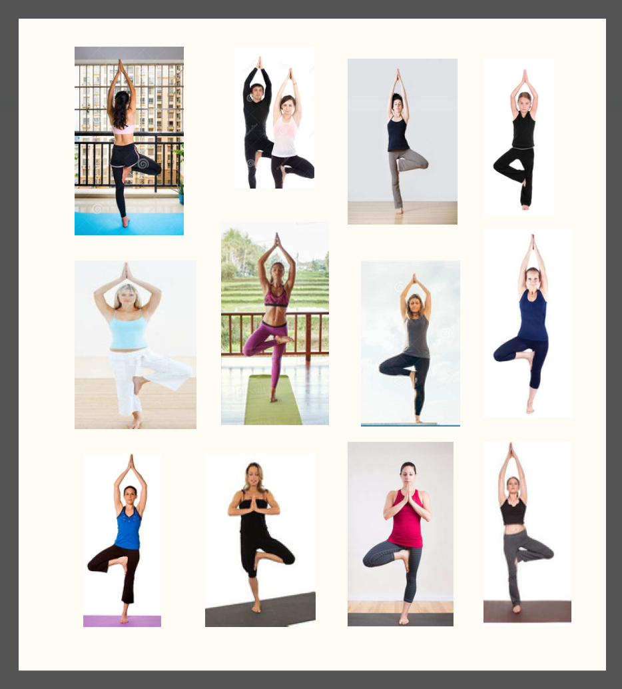
II. The AI process learns to understand and differentiate each body pose or workout movement.
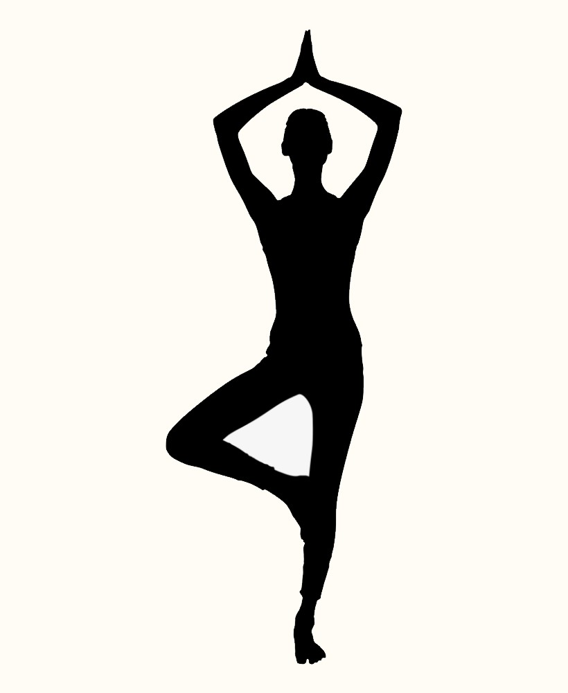
III. The system creates a reusable pose model for every movement and stores it for future use.
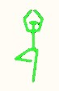
Phase 2 - I. When someone performs a workout, AI creates a new body model from the detected joints.
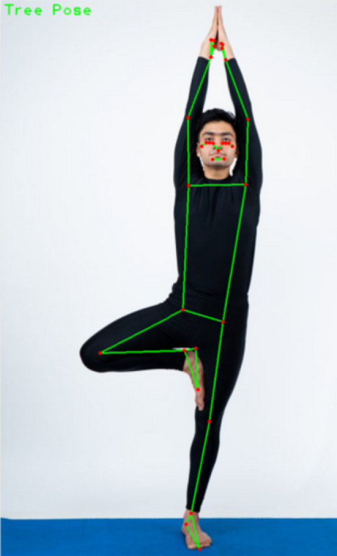
II. The newly generated model is compared with the trained reference model.
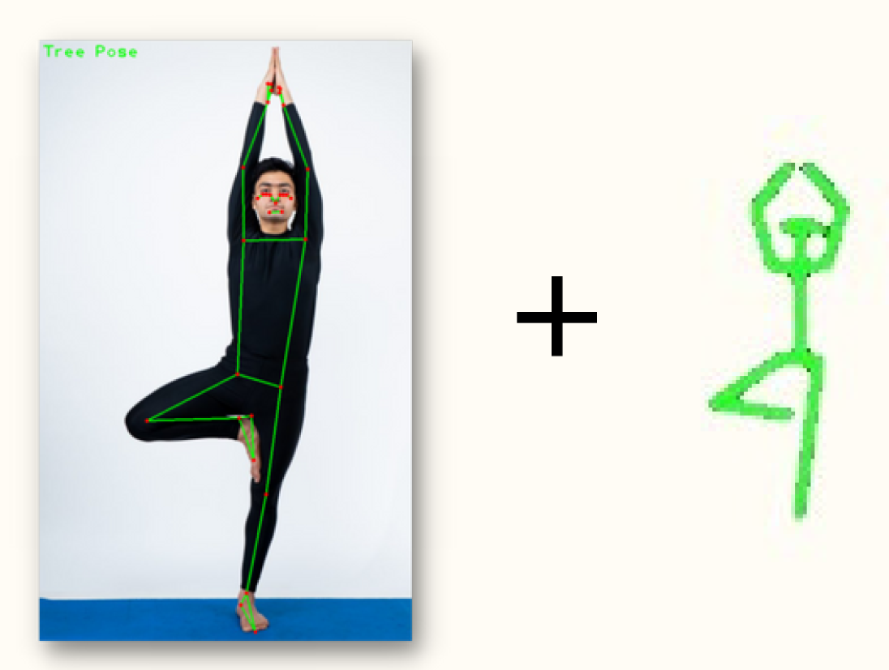
III. If both models match, the pose is considered correct. Otherwise, corrective feedback is provided.
The Experience
Step 1 - Onboarding
Users align the details of their injuries/problems in the getLife application. Based on their choices they are scheduled with an online physiotherapist session, and receive a custom prescription based on their personal injuries and medical history.
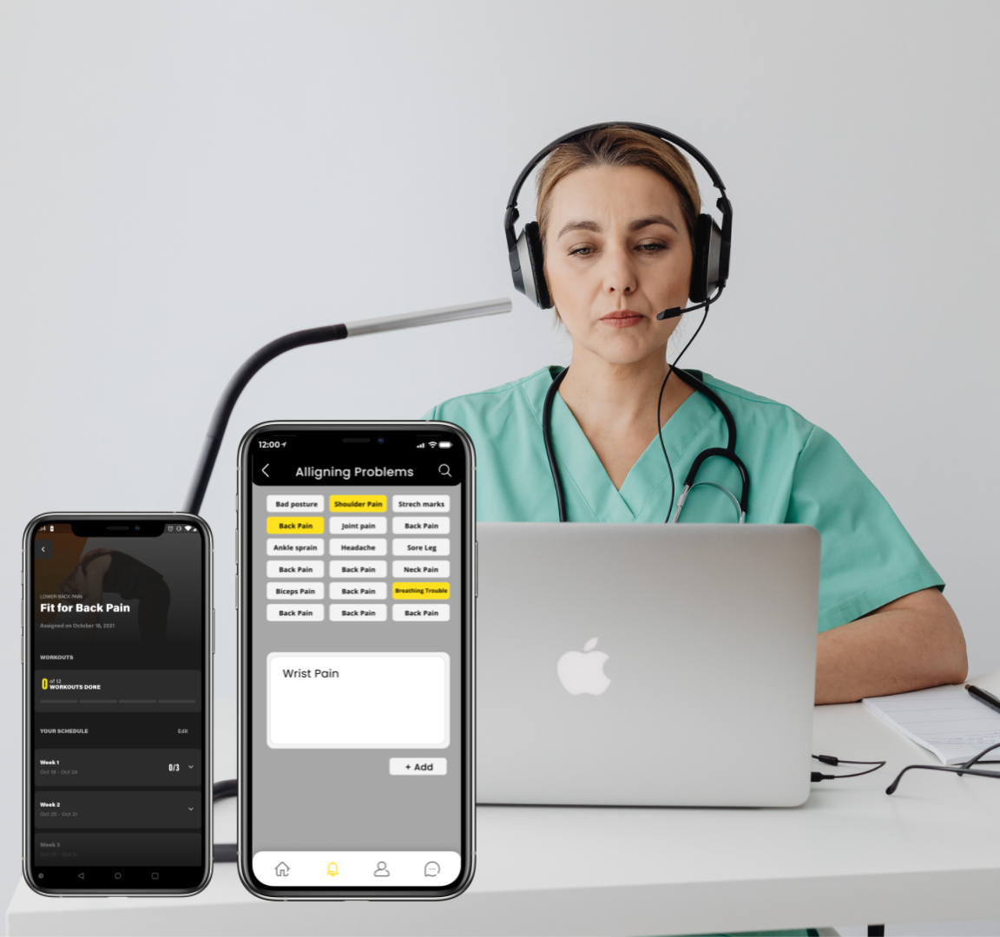
Step 2 - Physiotherapist Session
Following the physiotherapist's instructions, the trainee performs exercises already provided in the Technogym application. Their best repetitions are recorded and uploaded to getLife AI for processing.
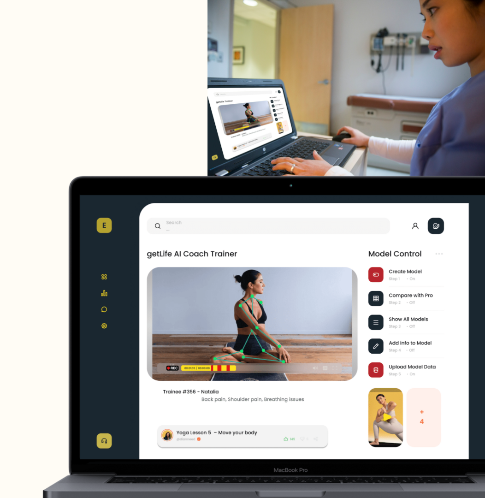
Step 3 - Personal Training Session
While exercising, getLife AI checks the user's posture and compares it with the user's previous posture model. When the user reaches their best performance, the AI Coach guides and motivates them towards the professional coach's model.
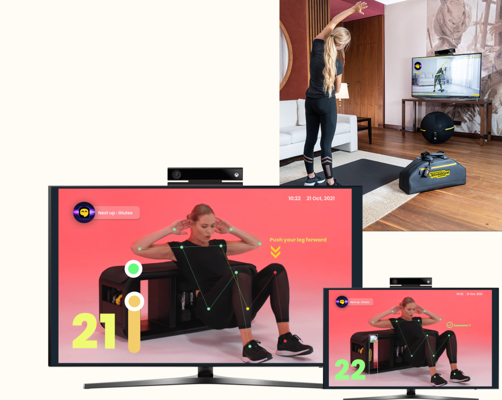
Step 4 - Physiotherapist / Coach Talk Sessions
Users receive advice to improve workouts or resolve issues they are experiencing. These sessions provide more human interaction alongside the AI Coach.
Prototype
- ml5.js
- p5.js
- Webcam
- HTML
- CSS
- JavaScript
- Figma
- Photoshop
Development
Development of the prototype started with the idea of using Kinect functionalities to gather high-level body gesture data together with an interface capable of communicating analysed information in a simple and efficient manner.
Interview insights showed that during physical activity users focus more on bodily functions than cognitive tasks. Therefore, exercise visualization had to remain extremely simple.
Further exploration led to TensorFlow together with ml5.js for browser-based pose estimation and p5.js for rapid interface prototyping. The system tracked three body joints: left shoulder, right shoulder, and right elbow.
Interactive elements such as a progress bar and skeleton width were added to communicate rehabilitation progress. The skeleton remained yellow during progress, gradually increasing in width as the user approached the target. Once the goal was achieved it turned green, visually reinforcing success and motivating continued rehabilitation.
The complete prototype, tutorials, and website were finally deployed using GitHub Pages.
Experience the prototype at this link:

Gamification - Drunk Flappy
The gamification module motivates users to continuously move their right hand. While playing and pursuing higher scores, shoulder rehabilitation continues naturally in the background.
Experience the prototype at this link:
getLife Gamification : Drunk Flappy
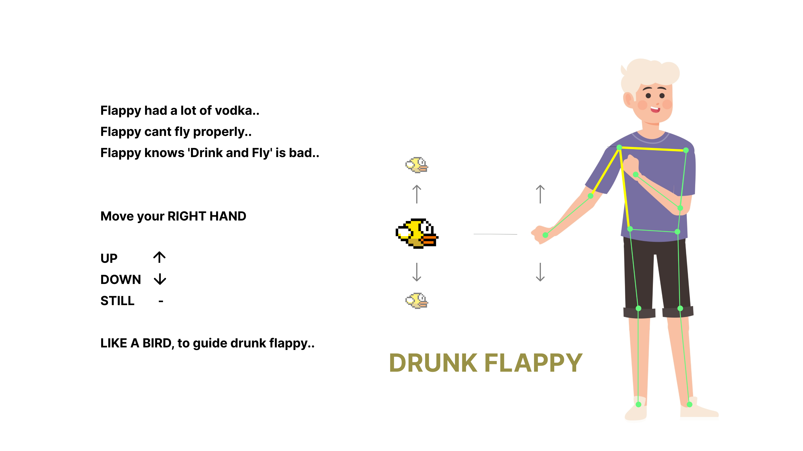
Summary - User Journey of getLife at a Glance
- Rehabilitation Journey
- Motivation Journey
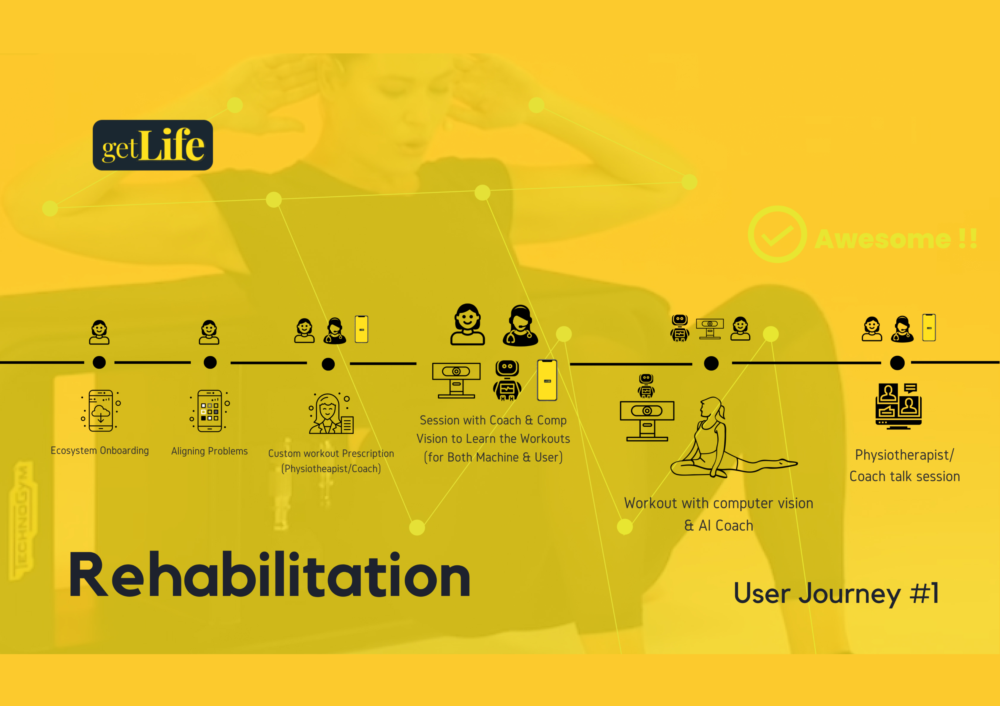
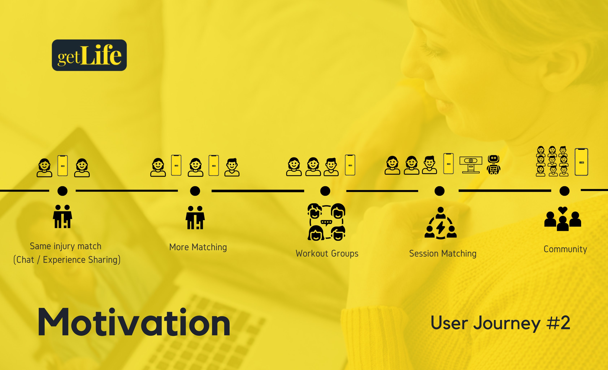